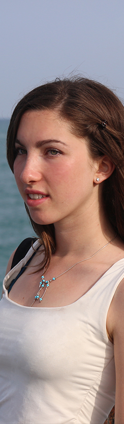

Aurélia Fabre
A Motivated Web design student
Have you ever imagined you were in a movie? I sometimes like seeing my life as a movie constantly evolving under my eyes. As a big dreamer, I often have my head in the clouds imagining new stories and creative stuff. When I'm not learning new songs with my ukulele, I run, draw or collect beautiful pictures to stay inspired. Sleek designs, soft colors and small details are my favorite ways to design a new project. Typography is also one of my favorite part. I’m currently a web design student, but feel free to contact me on my social media.